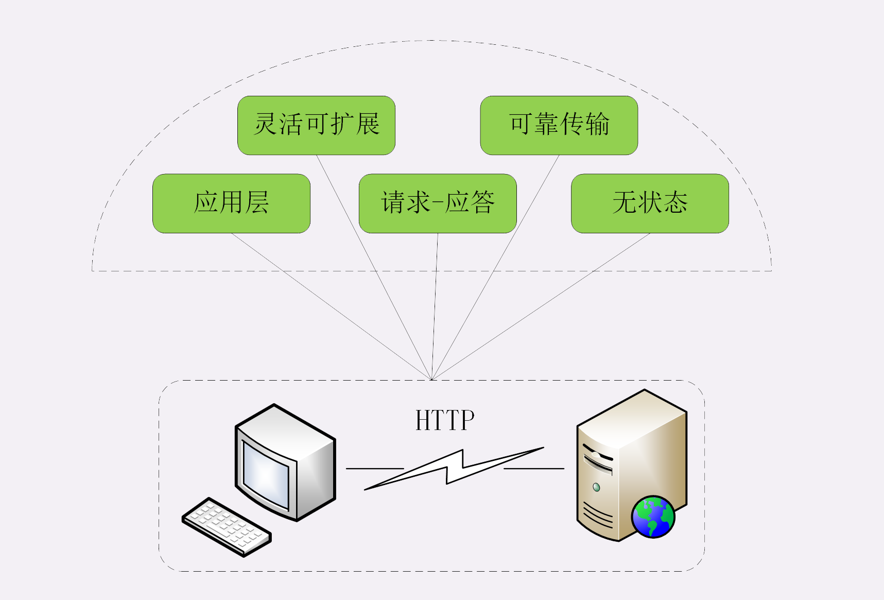
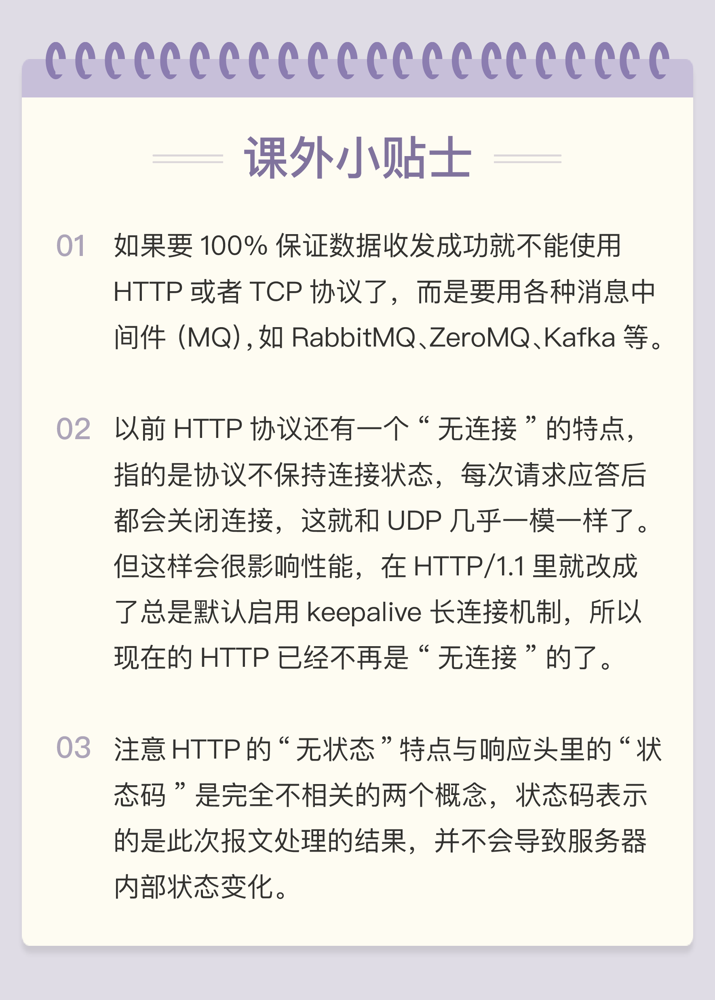

- 00 开篇词｜To Be a HTTP Hero.md.html
- 01 时势与英雄：HTTP的前世今生.md.html
- 02 HTTP是什么？HTTP又不是什么？.md.html
- 03 HTTP世界全览（上）：与HTTP相关的各种概念.md.html
- 04 HTTP世界全览（下）：与HTTP相关的各种协议.md.html
- 05 常说的“四层”和“七层”到底是什么？“五层”“六层”哪去了？.md.html
- 06 域名里有哪些门道？.md.html
- 07 自己动手，搭建HTTP实验环境.md.html
- 08 键入网址再按下回车，后面究竟发生了什么？.md.html
- 09 HTTP报文是什么样子的？.md.html
- 10 应该如何理解请求方法？.md.html
- 11 你能写出正确的网址吗？.md.html
- 12 响应状态码该怎么用？.md.html
- 13 HTTP有哪些特点？.md.html
- 14 HTTP有哪些优点？又有哪些缺点？.md.html
- 15 海纳百川：HTTP的实体数据.md.html
- 16 把大象装进冰箱：HTTP传输大文件的方法.md.html
- 17 排队也要讲效率：HTTP的连接管理.md.html
- 18 四通八达：HTTP的重定向和跳转.md.html
- 19 让我知道你是谁：HTTP的Cookie机制.md.html
- 20 生鲜速递：HTTP的缓存控制.md.html
- 21 良心中间商：HTTP的代理服务.md.html
- 22 冷链周转：HTTP的缓存代理.md.html
- 23 HTTPS是什么？SSLTLS又是什么？.md.html
- 24 固若金汤的根本（上）：对称加密与非对称加密.md.html
- 25 固若金汤的根本（下）：数字签名与证书.md.html
- 26 信任始于握手：TLS1.2连接过程解析.md.html
- 27 更好更快的握手：TLS1.3特性解析.md.html
- 28 连接太慢该怎么办：HTTPS的优化.md.html
- 29 我应该迁移到HTTPS吗？.md.html
- 30 时代之风（上）：HTTP2特性概览.md.html
- 31 时代之风（下）：HTTP2内核剖析.md.html
- 32 未来之路：HTTP3展望.md.html
- 33 我应该迁移到HTTP2吗？.md.html
- 34 Nginx：高性能的Web服务器.md.html
- 35 OpenResty：更灵活的Web服务器.md.html
- 36 WAF：保护我们的网络服务.md.html
- 37 CDN：加速我们的网络服务.md.html
- 38 WebSocket：沙盒里的TCP.md.html
- 39 HTTP性能优化面面观（上）.md.html
- 40 HTTP性能优化面面观（下）.md.html
- 结束语 做兴趣使然的Hero.md.html
13 HTTP有哪些特点？
通过“基础篇”前几讲的学习，你应该已经知道了 HTTP 协议的基本知识，了解它的报文结构，请求头、响应头以及内部的请求方法、URI 和状态码等细节。
你会不会有种疑惑：“HTTP 协议好像也挺简单的啊，凭什么它就能统治互联网这么多年呢？”
所以接下来的这两讲，我会跟你聊聊 HTTP 协议的特点、优点和缺点。既要看到它好的一面，也要正视它不好的一面，只有全方位、多角度了解 HTTP，才能实现“扬长避短”，更好地利用 HTTP。
今天这节课主要说的是 HTTP 协议的特点，但不会讲它们的好坏，这些特点即有可能是优点，也有可能是缺点，你可以边听边思考。

灵活可扩展
首先， HTTP 协议是一个“灵活可扩展”的传输协议。
HTTP 协议最初诞生的时候就比较简单，本着开放的精神只规定了报文的基本格式，比如用空格分隔单词，用换行分隔字段，“header+body”等，报文里的各个组成部分都没有做严格的语法语义限制，可以由开发者任意定制。
所以，HTTP 协议就随着互联网的发展一同成长起来了。在这个过程中，HTTP 协议逐渐增加了请求方法、版本号、状态码、头字段等特性。而 body 也不再限于文本形式的 TXT 或 HTML，而是能够传输图片、音频视频等任意数据，这些都是源于它的“灵活可扩展”的特点。
而那些 RFC 文档，实际上也可以理解为是对已有扩展的“承认和标准化”，实现了“从实践中来，到实践中去”的良性循环。
也正是因为这个特点，HTTP 才能在三十年的历史长河中“屹立不倒”，从最初的低速实验网络发展到现在的遍布全球的高速互联网，始终保持着旺盛的生命力。
可靠传输
第二个特点， HTTP 协议是一个“可靠”的传输协议。
这个特点显而易见，因为 HTTP 协议是基于 TCP/IP 的，而 TCP 本身是一个“可靠”的传输协议，所以 HTTP 自然也就继承了这个特性，能够在请求方和应答方之间“可靠”地传输数据。
它的具体做法与 TCP/UDP 差不多，都是对实际传输的数据（entity）做了一层包装，加上一个头，然后调用 Socket API，通过 TCP/IP 协议栈发送或者接收。
不过我们必须正确地理解“可靠”的含义，HTTP 并不能 100% 保证数据一定能够发送到另一端，在网络繁忙、连接质量差等恶劣的环境下，也有可能收发失败。“可靠”只是向使用者提供了一个“承诺”，会在下层用多种手段“尽量”保证数据的完整送达。
当然，如果遇到光纤被意外挖断这样的极端情况，即使是神仙也不能发送成功。所以，“可靠”传输是指在网络基本正常的情况下数据收发必定成功，借用运维里的术语，大概就是“3 个 9”或者“4 个 9”的程度吧。
应用层协议
第三个特点，HTTP 协议是一个应用层的协议。
这个特点也是不言自明的，但却很重要。
在 TCP/IP 诞生后的几十年里，虽然出现了许多的应用层协议，但它们都仅关注很小的应用领域，局限在很少的应用场景。例如 FTP 只能传输文件、SMTP 只能发送邮件、SSH 只能远程登录等，在通用的数据传输方面“完全不能打”。
所以 HTTP 凭借着可携带任意头字段和实体数据的报文结构，以及连接控制、缓存代理等方便易用的特性，一出现就“技压群雄”，迅速成为了应用层里的“明星”协议。只要不太苛求性能，HTTP 几乎可以传递一切东西，满足各种需求，称得上是一个“万能”的协议。
套用一个网上流行的段子，HTTP 完全可以用开玩笑的口吻说：“不要误会，我不是针对 FTP，我是说在座的应用层各位，都是垃圾。”
请求 - 应答
第四个特点，HTTP 协议使用的是请求 - 应答通信模式。
这个请求 - 应答模式是 HTTP 协议最根本的通信模型，通俗来讲就是“一发一收”“有来有去”，就像是写代码时的函数调用，只要填好请求头里的字段，“调用”后就会收到答复。
请求 - 应答模式也明确了 HTTP 协议里通信双方的定位，永远是请求方先发起连接和请求，是主动的，而应答方只有在收到请求后才能答复，是被动的，如果没有请求时不会有任何动作。
当然，请求方和应答方的角色也不是绝对的，在浏览器 - 服务器的场景里，通常服务器都是应答方，但如果将它用作代理连接后端服务器，那么它就可能同时扮演请求方和应答方的角色。
HTTP 的请求 - 应答模式也恰好契合了传统的 C/S（Client/Server）系统架构，请求方作为客户端、应答方作为服务器。所以，随着互联网的发展就出现了 B/S（Browser/Server）架构，用轻量级的浏览器代替笨重的客户端应用，实现零维护的“瘦”客户端，而服务器则摈弃私有通信协议转而使用 HTTP 协议。
此外，请求 - 应答模式也完全符合 RPC（Remote Procedure Call）的工作模式，可以把 HTTP 请求处理封装成远程函数调用，导致了 WebService、RESTful 和 gPRC 等的出现。
无状态
第五个特点，HTTP 协议是无状态的。
这个所谓的“状态”应该怎么理解呢？
“状态”其实就是客户端或者服务器里保存的一些数据或者标志，记录了通信过程中的一些变化信息。
你一定知道，TCP 协议是有状态的，一开始处于 CLOSED 状态，连接成功后是 ESTABLISHED 状态，断开连接后是 FIN-WAIT 状态，最后又是 CLOSED 状态。
这些“状态”就需要 TCP 在内部用一些数据结构去维护，可以简单地想象成是个标志量，标记当前所处的状态，例如 0 是 CLOSED，2 是 ESTABLISHED 等等。
再来看 HTTP，那么对比一下 TCP 就看出来了，在整个协议里没有规定任何的“状态”，客户端和服务器永远是处在一种“无知”的状态。建立连接前两者互不知情，每次收发的报文也都是互相独立的，没有任何的联系。收发报文也不会对客户端或服务器产生任何影响，连接后也不会要求保存任何信息。
“无状态”形象地来说就是“没有记忆能力”。比如，浏览器发了一个请求，说“我是小明，请给我 A 文件。”，服务器收到报文后就会检查一下权限，看小明确实可以访问 A 文件，于是把文件发回给浏览器。接着浏览器还想要 B 文件，但服务器不会记录刚才的请求状态，不知道第二个请求和第一个请求是同一个浏览器发来的，所以浏览器必须还得重复一次自己的身份才行：“我是刚才的小明，请再给我 B 文件。”
我们可以再对比一下 UDP 协议，不过它是无连接也无状态的，顺序发包乱序收包，数据包发出去后就不管了，收到后也不会顺序整理。而 HTTP 是有连接无状态，顺序发包顺序收包，按照收发的顺序管理报文。
但不要忘了 HTTP 是“灵活可扩展”的，虽然标准里没有规定“状态”，但完全能够在协议的框架里给它“打个补丁”，增加这个特性。
其他特点
除了以上的五大特点，其实 HTTP 协议还可以列出非常多的特点，例如传输的实体数据可缓存可压缩、可分段获取数据、支持身份认证、支持国际化语言等。但这些并不能算是 HTTP 的基本特点，因为这都是由第一个“灵活可扩展”的特点所衍生出来的。
小结
- HTTP 是灵活可扩展的，可以任意添加头字段实现任意功能；
- HTTP 是可靠传输协议，基于 TCP/IP 协议“尽量”保证数据的送达；
- HTTP 是应用层协议，比 FTP、SSH 等更通用功能更多，能够传输任意数据；
- HTTP 使用了请求 - 应答模式，客户端主动发起请求，服务器被动回复请求；
- HTTP 本质上是无状态的，每个请求都是互相独立、毫无关联的，协议不要求客户端或服务器记录请求相关的信息。
课下作业
- 就如同开头我讲的那样，你能说一下今天列出的这些 HTTP 的特点中哪些是优点，哪些是缺点吗？
- 不同的应用场合有不同的侧重方面，你觉得哪个特点对你来说是最重要的呢？
欢迎你把自己的答案写在留言区，与我和其他同学一起讨论。如果你觉得有所收获，欢迎你把文章分享给你的朋友。
